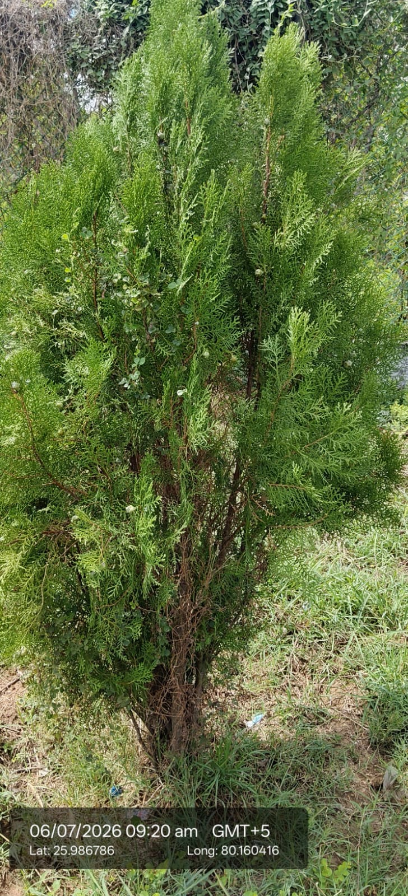

Visual record01 photographs

| Scientific name | Platycladus orientalis (older name: Thuja orientalis) |
|---|---|
| Type | Evergreen coniferous shrub or small tree |
| Category | Shrubs |
Habitat & Growing Conditions
- Native to China, Korea, and Far East Russia
- Grows well in temperate to subtropical regions
- Commonly cultivated in gardens, parks, and temples across India
- Prefers well-drained soil and full sun to partial shade
- Drought tolerant once established
Economic Importance
- Ornamental: Widely used as hedge plant, topiary, and bonsai
- Timber: Wood is durable, used for furniture and small handicrafts
Medicinal Importance
- Leaves used in traditional medicine for cough, fever, hair growth
- Essential oil: Leaf oil has antimicrobial properties, used in cosmetics
- Religious: Planted in temples; considered auspicious in Vastu
- Air purifier: Popular indoor/outdoor plant for improving air qualit